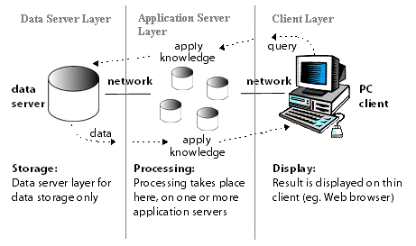

Internet for the Enterprise
Chapter 1
Introduction to Computers and the Internet
• HTML (Hyper Text Mark-up Language)
-a special type of computer language called a markup language designed to specify the content and structure of web pages (also called documents) in a portable manner. HTML5, now under development, is the emerging version of HTML. HTML enables you to create content that will render appropriately across the extraordinary range of devices connected to the Internet-including smartphones, tablet computers, notebook computers, desktop computers, special-purpose devices such as large-screen displays at concert arenas and sports stadiums, and more.
• Cascading Style Sheets (CSS)Cascading Style Sheets (CSS) to specify the presentation, or styling, of elements on a web page (e.g., fonts, spacing, sizes, colors, positioning). CSS was designed to style portable web pages independently of their content and structure. By separating page styling from page content and structure, you can easily change the look and feel of the pages on an entire website, or a portion of a website, simply by swapping out one style sheet for another. CSS3 is the current version of CSS under development.
• JavaScript JavaScript is a language that helps you build dynamic web pages (i.e., pages that can be modified "on the fly" in response to events, such as user input, time changes and more) and computer applications. It enables you to do the client-side programming of web applications.
In addition, there are now several projects dedicated to server-side JavaScript, including CommonJS (www.commonjs.org), Node.js (nodejs.org) and Jaxer (jaxer.org). JavaScript was created by Netscape, the company that built the first wildly successful web browser. Both Netscape and Microsoft have been instrumental in the standardization of JavaScript by ECMA International (formerly the European Computer Manufacturers Association) as ECMAScript.
Ensuring a consistent look and feel on client-side browsers is one of the great challenges of developing web-based applications. Currently, a standard does not exist to which software vendors must adhere when creating web browsers. Although browsers share a common set of features, each browser might render pages differently. Browsers are available in many versions and on many different platforms (Microsoft Windows, Apple Macintosh, Linux, UNIX, etc.). Vendors add features to each new version that sometimes result in cross-platform incompatibility issues. It's difficult to develop web pages that render correctly on all versions of each browser.
• jQueryjQuery (jQuery.org) is currently the most popular of hundreds of JavaScript libraries.3 jQuery simplifies JavaScript programming by making it easier to manipulate a web page's elements and interact with servers in a portable manner across various web browsers. It provides a library of custom graphical user interface (GUI) controls (beyond the basic GUI controls provided byHTML5) that can be used to enhance the look and feel of your web pages.
• Validating Your HTML5, CSS3 and JavaScript Code HTML5 http://validator.w3.org/ and http://html5.validator.nu/
CSS3 http://jigsaw.w3.org/css-validator/
JavaScript http://www.javascriptlint.com/ and http://www.jslint.com/
Web-based applications are often multitier applications (sometimes referred to as n-tier applications) that divide functionality into separate tiers (i.e., logical groupings of functionality). Although tiers can be located on the same computer, the tiers of web-based applications often reside on separate computers.

• World Wide Web Consortium (W3C) In October 1994, Tim Berners-Lee founded an organization-the World Wide Web Consortium (W3C)-devoted to developing nonproprietary, interoperable technologies for the World Wide Web. One of the W3C's primary goals is to make the web universally accessible-regardless of disability, language or culture. The W3C home page (www.w3.org) provides extensive resources on Internet and web technologies.
The W3C is also a standards organization. Web technologies standardized by the W3C are called Recommendations. Current and forthcoming W3C Recommendations include the HyperText Markup Language 5 (HTML5), Cascading Style Sheets 3 (CSS3) and the Extensible Markup Language (XML). A recommendation is not an actual software product but a document that specifies a technology's role, syntax rules and so forth.